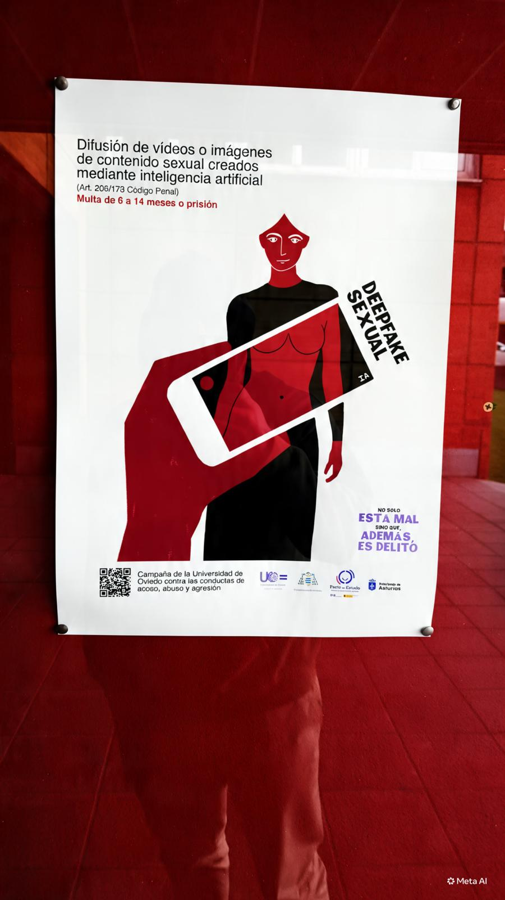
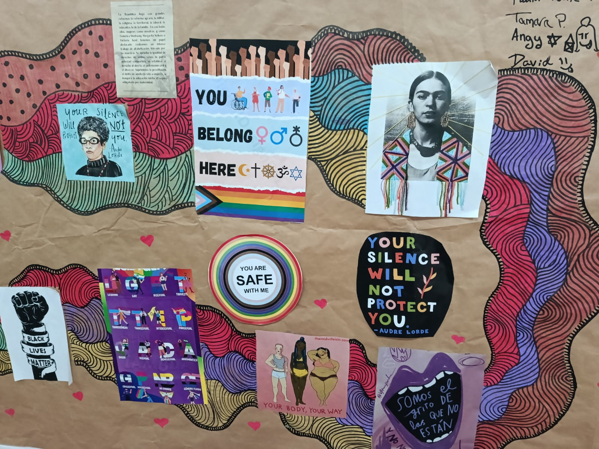
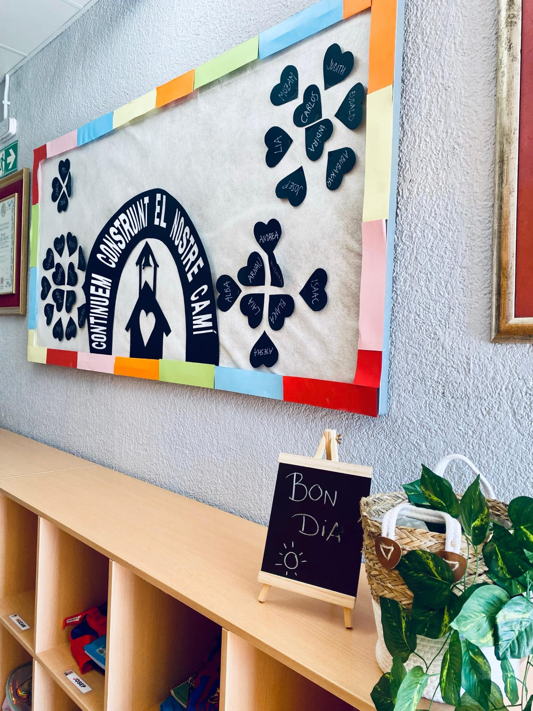
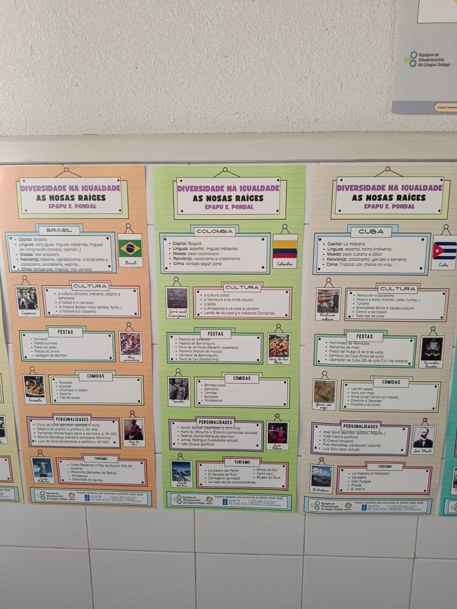
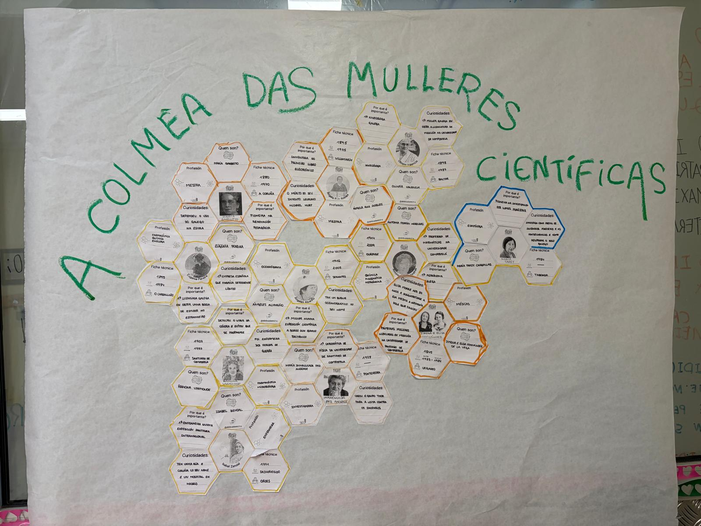

@TheSociologicalWall
Cuenta VerificadaMáster en Formación del Profesorado (UDIMA)
Asignatura: Sociedad, Familia y Educación
✨ Miembros del Grupo de Investigación:
Cartel sobre Deepfakes Sexuales
Campus del Cristo (Universidad de Oviedo) - Facultad de Derecho

Enlace bloqueado por el navegador o entorno.
Pulsa el botón de arriba "Cargar mis 5 fotos" para subirlas si no se visualizan.
142 Me gusta
@TheSociologicalWall Este cartel irrumpe en el paisaje universitario rompiendo su aparente neutralidad y actuando como un potente elemento de currículo oculto. Visualmente, la mano masculina que enfoca el cuerpo de una mujer a través del móvil evidencia la prescripción del patriarcado y la cosificación digital, conectando con el control y la vigilancia de Foucault (1975). Al citar el Código Penal, el cartel apela a la dominación legal-racional (Weber, 1921/1979) para establecer qué conductas son inaceptables (Rocher, 1973/2006).
Desde la sociología, refleja cómo las tecnologías son potentes agentes de socialización (Picasso, 2023) que reproducen la socialización diferencial de género y la violencia simbólica. Pedagógicamente, es una herramienta clave para trabajar el consentimiento y la intimidad, evidenciando la necesidad de una alfabetización mediática crítica (Buckingham, 2003) frente a los riesgos de la "modernidad líquida" (Bauman, 2005).
Comentarios de los Teóricos
Mural sobre Diversidad e Inclusión
E.P.A. Eduardo Pondal, A Coruña

Enlace bloqueado por el navegador o entorno.
218 Me gusta
@TheSociologicalWall Este mural, creado por el propio alumnado, transforma las paredes del centro en un microcosmos de concienciación y conflicto ideológico. Lejos de ser una simple decoración, actúa como un potente currículo oculto (Carrasco Carpio & Ibáñez Carrasco, 2024) que desafía los roles tradicionales y la socialización diferencial de género (Picasso, 2023).(Bonilla-Algovia & Carrasco Carpio, 2024).
A través de referentes feministas (Audre Lorde, Frida Kahlo), el movimiento antirracista y consignas como "Your body, your way", los estudiantes ejercen su imaginación sociológica (Wright Mills, 1959). Conectan grandes problemas globales con su propia identidad íntima, aplicando la interseccionalidad (Crenshaw, 1989) para entrelazar género, raza y diversidad corporal, y construyendo un espacio seguro frente al sexismo (SOS Racismo Gipuzkoa, 2022).
Sin embargo, como señalan las aportaciones del equipo, mostrar diversidad no garantiza por sí solo la inclusión. Para que este mensaje visual se convierta en una realidad objetiva y subjetiva (Berger & Luckmann, 1968/2001) y no quede en un mero gesto estético, debe reflejarse en la convivencia diaria, en la participación real y sostenerse mediante un currículum explícito y transversal (Bonilla-Algovia & Carrasco Carpio, 2024).
Comentarios de los Teóricos
Mural «Continuem construint el nostre camí»
Escuela Sant Blai, Bot, Terra Alta, provincia Tarragona

Enlace bloqueado por el navegador o entorno.
305 Me gusta
@TheSociologicalWall Este mural transforma el espacio escolar en un reflejo de la sociedad y en una comunidad compartida. El mural, que entremezcla nombres de distintos orígenes bajo el lema "Continuem construint el nostre camí", actúa como el "cemento de la sociedad" (Elster, 1989) y refuerza el vínculo social (Nisbet, 1970/1982).
El espacio físico funciona aquí como un currículo oculto (Jackson, 1968/1991; Apple, 1986) que transmite valores de democracia y participación. Al integrar los nombres de todo el grupo en corazones idénticos, se favorece la construcción del sentimiento de pertenencia e identidad (Picasso, 2023). Esto actúa como un ancla frente a la fragilidad de la "modernidad líquida" (Bauman, 2005) y facilita la transición hacia la socialización secundaria, ayudando a interiorizar normas de convivencia y cohesión grupal más allá del ámbito familiar (Berger & Luckmann, 1968/2001; Mead, 1926/1999).
Comentarios de los Teóricos
Paneles de Brasil, Colombia y Cuba
E.P.A. Eduardo Pondal, A Coruña

Enlace bloqueado por el navegador o entorno.
189 Me gusta
@TheSociologicalWall Estos paneles exponen la diversidad cultural del centro mediante la comparación de tres países, empleando la lengua gallega como vehículo de inclusión. Desde la sociología, reflejan los elementos normativos, afectivos y cognitivos de la cultura (Picasso, 2023), pero corren el peligro de caer en un enfoque superficial si se limitan a mostrar gastronomía y festividades, sin abordar las barreras socioeconómicas reales que afrontan las familias (Bernstein, 1993).
El gran acierto del mural es su capacidad para romper con el currículo monocultural y etnocéntrico tradicional. Al incorporar figuras históricas y lenguas indígenas, se combate la reproducción cultural de las élites (Bourdieu & Passeron, 1977) y se aportan contenidos descolonizados (Walsh, 2010). No obstante, como advierte el equipo, mostrar diversidad no es sinónimo de inclusión real. Para que la escuela cumpla su función socializadora igualitaria (Durkheim, 1922/1975) y evite una visión estática de la cultura (García Santacruz & Flórez-Estrada Chassonnaud, 2023), es necesario que estos paneles se acompañen de dinámicas dialógicas donde el alumnado comparta sus propias vivencias y se cuestione el verdadero significado de la igualdad y la diferencia (De Sousa Santos, 2003).
Comentarios de los Teóricos
Mural «A Colmea das Mulleres Científicas»
CPI Plurilingüe de Castroverde, Lugo, Galicia

Enlace bloqueado por el navegador o entorno.
412 Me gusta
@TheSociologicalWall Este mural en forma de panal, elaborado en gallego, es un potente elemento del paisaje lingüístico que legitima un universo simbólico propio y rompe con la jerarquización cultural (Berger & Luckmann, 1968/2001). Su estructura colectiva visibiliza las aportaciones femeninas a la ciencia, combatiendo directamente el androcentrismo y el currículo oculto que históricamente ha desviado a las alumnas de las disciplinas STEM (Subirats & Brullet, 2002; Cobo, 2002).
Para que este paisaje gráfico sea plenamente inclusivo, es fundamental aplicar la interseccionalidad (Crenshaw, 1989), asegurando que las científicas representadas abarquen diversas razas y clases sociales. De este modo, el centro no solo visibiliza, sino que transforma las estructuras de poder, transmitiendo nuevos valores colectivos y demostrando al alumnado que no existen ámbitos de conocimiento exclusivamente masculinos o femeninos.
Comentarios de los Teóricos